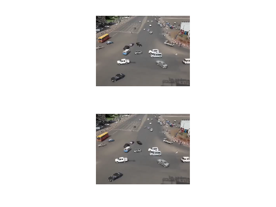
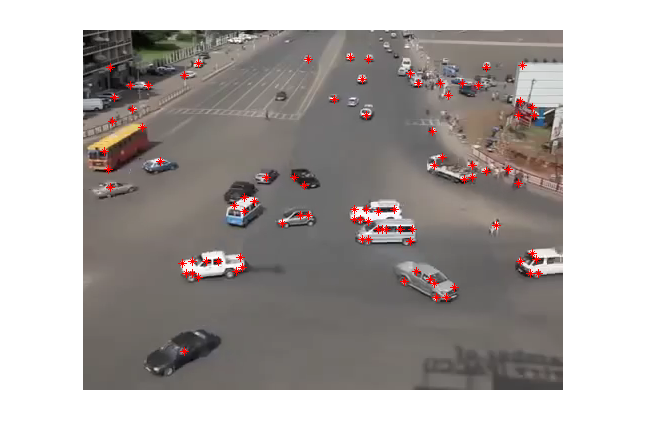
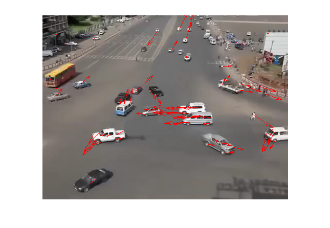

Lucas-Kanade Method Example 2
This example uses Lucas-Kanade method on two images and calculate the optical flow vector for moving objects in the image.
Contents
Load images
clear all; load traffic_frames figure(); subplot 211 imshow(fr1); im1 = im2double(rgb2gray(fr1)); subplot 212 imshow(fr2); im2 = im2double(rgb2gray(fr2));
Find corners
Define the window size for Lucas-Kanade method
ww = 40; w = round(ww/2); % Reduce the size of the image sc = 2; im2c = imresize(im2, 1/sc); C1 = corner(im2c); C1 = C1*sc; % Discard coners near the margin of the image k = 1; for i = 1:size(C1,1) x_i = C1(i, 2); y_i = C1(i, 1); if x_i-w>=1 && y_i-w>=1 && x_i+w<=size(im1,1)-1 && y_i+w<=size(im1,2)-1 C(k,:) = C1(i,:); k = k+1; end end % Plot corners on the image figure(); imshow(fr2); hold on plot(C(:,1), C(:,2), 'r*');
Implementing Lucas Kanade Method
for each point, calculate I_x, I_y, I_t
Ix_m = conv2(im1,[-1 1; -1 1], 'valid'); % partial on x Iy_m = conv2(im1, [-1 -1; 1 1], 'valid'); % partial on y It_m = conv2(im1, ones(2), 'valid') + conv2(im2, -ones(2), 'valid'); % partial on t u = zeros(length(C),1); v = zeros(length(C),1); % within window ww * ww for k = 1:length(C(:,2)) i = C(k,2); j = C(k,1); Ix = Ix_m(i-w:i+w, j-w:j+w); Iy = Iy_m(i-w:i+w, j-w:j+w); It = It_m(i-w:i+w, j-w:j+w); Ix = Ix(:); Iy = Iy(:); b = -It(:); % get b here A = [Ix Iy]; % get A here nu = pinv(A)*b; u(k)=nu(1); v(k)=nu(2); end;
Draw the optical flow vectors
figure(); imshow(fr2); hold on; quiver(C(:,1), C(:,2), u,v, 1,'r')